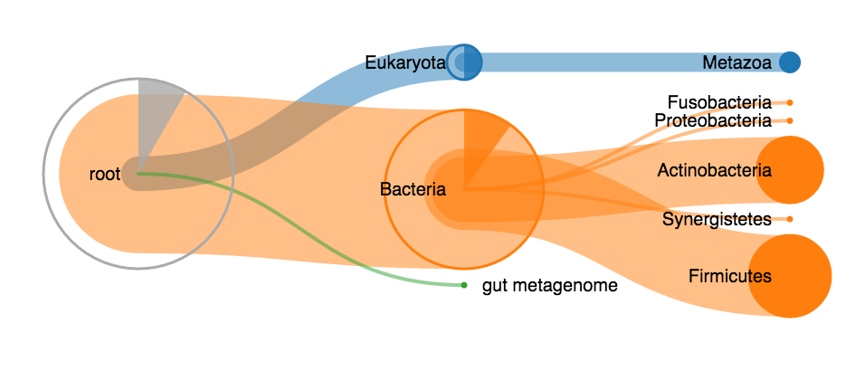
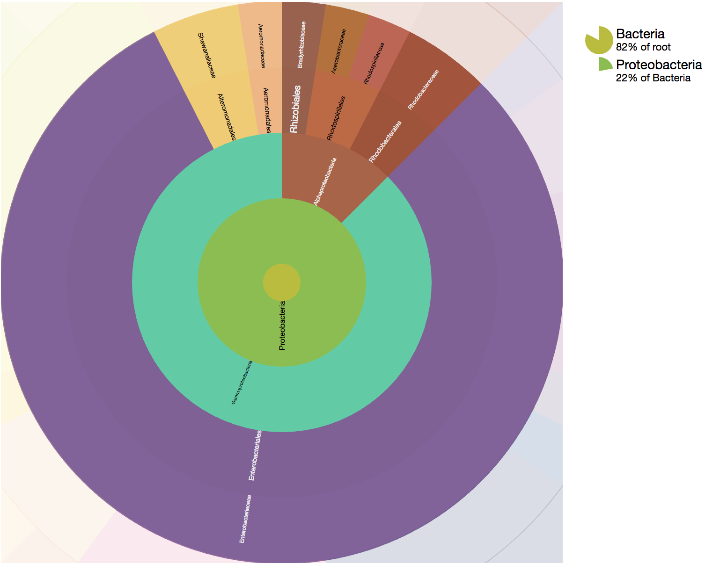
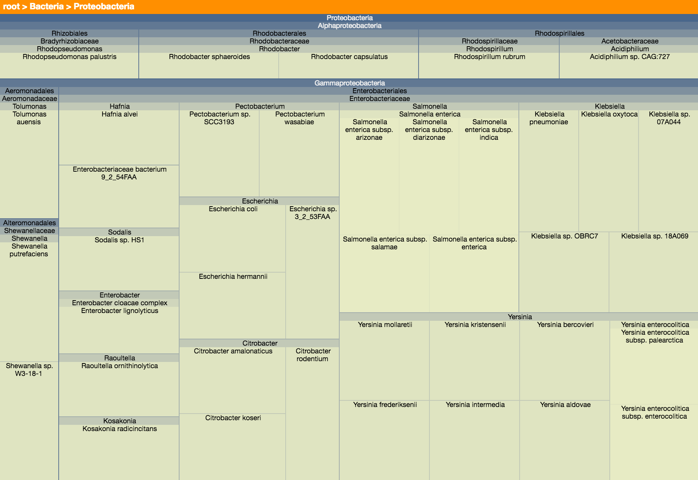
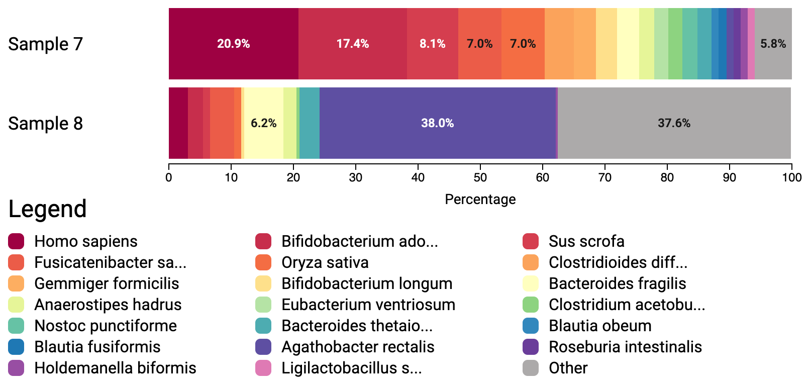
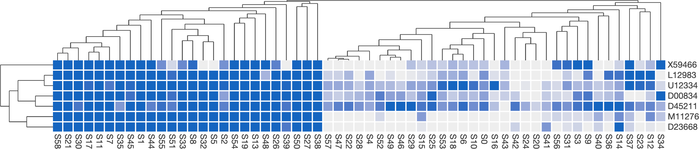

Live examples
-

Treeview
A collapsible node–link tree. Best when you want to walk a hierarchy branch by branch and read the labels.
-

Sunburst
Concentric rings, one per level. Shows how a hierarchy divides at every depth at once, and zooms on click.
-

Treemap
Nested rectangles sized by count. The one to reach for when relative magnitude matters more than structure.
-

-

Heatmap
A canvas-rendered matrix with optional UPGMA clustering and dendrograms, which keeps up with grids of a few hundred by a few hundred cells.